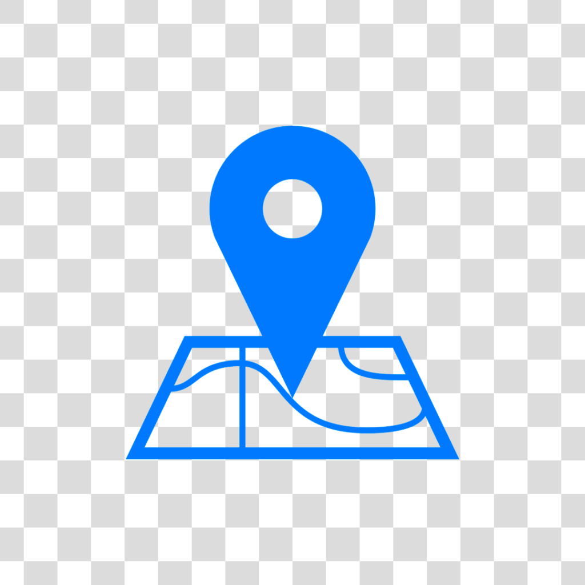

Dados Pessoais
Nome: Rafael Aragão de Azevedo
Data de Nascimento: 22 de Maio de 1986.
Endereço: Residente da Rua Eugênio Cavalcanti, 47 - Centro - Nova Iguaçu - RJ 
CEP: 26.250-050.
Contato: (21) 2695-2352 | Cel: (21) 97412-1812
Email: rafael.aragao.rj@gmail.com 
Objetivo
Informática, TI, Telecomunicações - Montagem e Manutenção de Micros | Programador | Desenvolvedor | Instrutor
Qualidades e Habilidades
- Facilidade no trabalho em equipe
- Dinâmico
- Responsável
- Comunicativo
- Organizado
- Pontualidade
Cursos
- SOS Educação Profissional | Operador de Sistemas | 153 horas
- SOS Educação Profissional | Designer Gráfico | 78 horas
- SOS Educação Profissional | Web Designer | 84 horas
- Digirati Informática, Serviços E Telecomunicações LTDA | Algoritmos | 40 horas
- Digirati Informática, Serviços E Telecomunicações LTDA | MySQL | 40 horas
- Digirati Informática, Serviços E Telecomunicações LTDA | Python | 40 horas
- Digirati Informática, Serviços E Telecomunicações LTDA | Git e GitHub | 20 horas
- Info Treine Escola de informática | Auxiliar de Administração, Propaganda & Marketing | 25 horas
- Cultura Inglesa | Inglês | 220 horas
Composto por aulas sobre o Sistema Operacional Windows e Linux Ubuntu tanto no uso como configurações dos sistemas, edição de documentos como Memorando, Circular, Relatório seguindo as normas ABNT com Word, criação de planilhas como Controle de Estoque com Excel, Apresentação em slides com PowerPoint e Gerenciamento e configuração de emails com Outlook.
Composto por aulas sobre criação de peças publicitárias e vetorização com Corel Draw, Tratamento e edição de imagens com Photoshop e diagramação de páginas de jornais e revistas com Indesign, além de sua preparação para processo de impressão.
Composto por aulas sobre o desenvolvimento de páginas web com Macromedia Dreamweaver, criação de animações usando Macromedia Flash e edição de imagens de bitmaps e desenhos vetoriais com Fireworks, finalizando com hospedagem das páginas em servidor web.
Aprender técnicas de análise que nos permitem comparar e contrastar soluções baseadas unicamente em suas próprias características, usando a base de aprendizado para aprendizado de outras linguagens de programação.
Aprender como manipular e recuperar os dados, fazendo a integração dessa linguagem ao banco de dados com ajuda do SQL
Aulas voltadas a uma linguagem de programação amplamente usada em aplicações da Web, desenvolvimento de software, ciência de dados e machine learning (ML).
Aprender versionamento, criação de perfil, seus comandos e parâmetros
Experiência Profissional
- Empresa: codeBuddy InStore - Cultura Inglesa
- Cargo: Instrutor de Programação | Online e Presencial
Ensinar programação para crianças e adolescentes inserindo-os a lógica de programação, capacitando-os para criação de jogos usando as plataformas Scratch, Construct e Unity, Aplicativos, tendo como ferramentas Framer, Figma, Thunkable e MIT App Inventor, prototipagem de projetos robóticos usando a linguagem de programação C++, desenvolvimento de páginas web com HTML, CSS e JavaScript. Preenchimento de relatório de desempenho, emissão de certificados e Soft Skills como colaboração, flexibilidade, resiliência e oratória.
- Empresa: Magnificat Comunicação Integrada Eireli - ME
- Cargo: Vendedor e Suporte Tecnico
Representar comercialmente a matriz no Rio de Janeiro, realizar a venda de produtos, preencher inventário, conferência de produtos em estoque, conferência de saída dos produtos, relatório diário de vendas, atendimento ao cliente buscando a melhor solução para resolução de possíveis problemas, responsável pelo recebimento e controle de mercadorias, realizar configurações em dispositivos móveis, sanar dúvidas dos clientes.
- Empresa: Solis Digital Max - Nova Iguaçu
- Cargo: Analista de Suporte Técnico
Suporte aos usuários da rede de computadores, envolvendo a montagem, reparos e configurações de equipamentos e na utilização do hardware e software disponíveis. Criar e implantar procedimentos de restrição do acesso e utilização da rede, como senhas, eliminação de drives etc. Instalar softwares de up-grade e fazer outras adaptações / modificações para melhorar o desempenho dos equipamentos. Participar da análise de partes / acessórios e materiais de informática que exijam especificação ou configuração. Preparar relatórios de acompanhamento do trabalho técnico realizado. Preparar inventário do hardware existente, controlando notas fiscais de aquisição, contratos de manutenção e prazos de garantia. Conhecimento em hardware, software, Sistema Operacional Windows, Server, Impressora, Rede e telefonia.
- Empresa: Solis Digital Max - Nova Iguaçu
- Cargo: Instrutor de Informática
Instrutor de informática nos segmentos de software livre ministrando aula de informática ênfase em operador de sistema com aulas sobre o Linux Ubuntu tanto no uso como configurações do sistema e linhas de comando, edição de documentos como Memorando, Circular, Relatório seguindo as normas ABNT com Writer, criação de planilhas como Controle de Estoque com Calc, Apresentação em slides com Impress e Gerenciamento e configuração de emails com Thunderbird e Design gráfico composto por aulas sobre criação de peças publicitárias e vetorização com Inkscape, Tratamento e edição de imagens com GIMP, computação gráfica 3D com Blender, Estruturação de páginas web com HTML5 e CSS3 e Programação das páginas Usando PHP e MySql, Montagem e Manutenção preventiva e corretiva de computadores, criando exercícios complementares e outras atividades realizadas em sala. Reuniões de pais e relatórios de desempenho dos alunos.
- Empresa: SOS Educação Profissional
- Cargo: Instrutor de Informática
Ministrando aula de informática ênfase em Operador de sistema com aulas sobre o Sistema Operacional Windows e Linux Ubuntu tanto no uso como configurações dos sistemas, edição de documentos como Memorando, Circular, Relatório seguindo as normas ABNT com Word, criação de planilhas como Controle de Estoque com Excel, Apresentação em slides com PowerPoint e Gerenciamento e configuração de emails com Outlook e Design gráfico composto por aulas sobre criação de peças publicitárias e vetorização com Corel Draw, Tratamento e edição de imagens com Photoshop e diagramação de páginas de jornais e revistas com Indesign, além de sua preparação para processo de impressão, criando exercícios complementares e outras atividades realizadas em sala.
Formação Acadêmica
Análise e Desenvolvimento de Sistemas no Centro Universitário das Faculdades Metropolitanas Unidas - FMU - SP no ano de 2021.
Outras informações
Redes Sociais:


Palestrante convidado no Festival Latino Americano de Instalação de Software Livre - Flisol
Realizado pela Secretaria de Projetos Estratégicos, Ciência e Tecnologia em Niterói